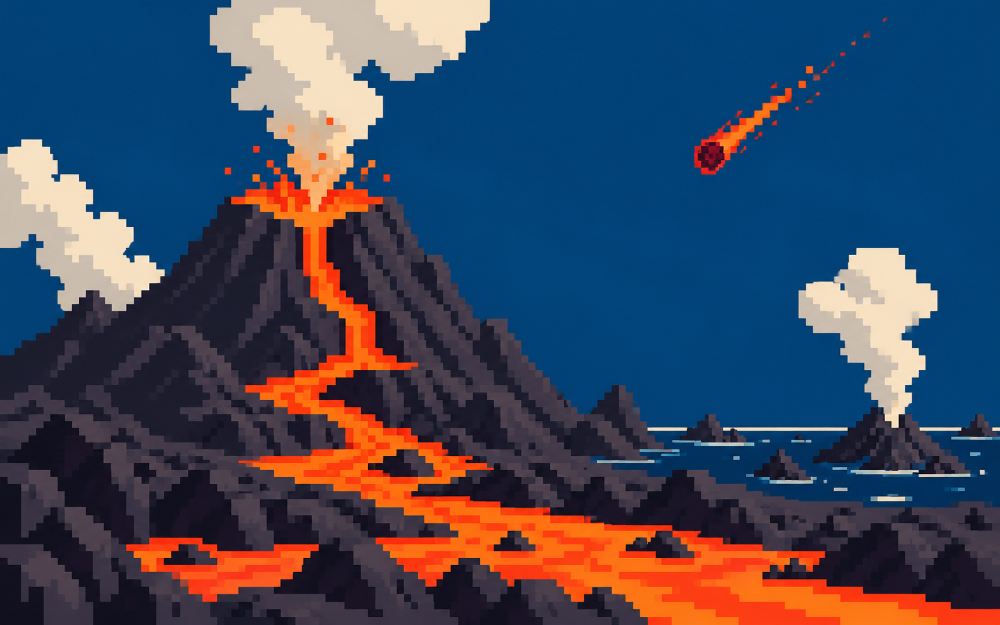

Earth assembles from dust and rock.

ISLAND 01 · BEGINNINGS
THE HADEAN
4.54–4.0 BILLION YEARS AGO
Earth’s opening chapter was a violent construction site: heat, impacts, magma, and a surface still learning how to become a planet.
← BACK TO MAP◆ABOUT THE HADEAN
Earth formed about 4.54 billion years ago. During the Hadean, impacts were common and the surface was often molten. But ancient zircon crystals suggest that liquid water may already have existed surprisingly early, hinting at a cooler, more complex world than the name “Hadean” suggests.
▶WATCH THE CLUE
▶OPEN VIDEO
A short visual introduction to Earth’s formation, the young Moon,
and why this earliest eon is so difficult to reconstruct.
WATCH ON YOUTUBE ↗
WATCH ON YOUTUBE ↗
◷KEY EVENTS TIMELINE
A giant impact helps form the Moon.
Zircons record early crust and possible water.
The Archean begins.
Dates are approximate: the oldest chapter survives mostly as minerals, not intact rocks.
?FIELD NOTES
WHY SO FEW ROCKS?
Plate recycling and erosion erased almost all direct Hadean crust.
THE MOON CLUE
Its cratered surface preserves a rough record of early impacts on the Earth–Moon system.
WATER, EARLY?
Some 4.4-billion-year-old zircons contain chemical clues consistent with water.
iSOURCE TRAIL
Core facts adapted from NASA: Ancient Crystals Suggest Earlier Ocean and the USGS geologic time chart.